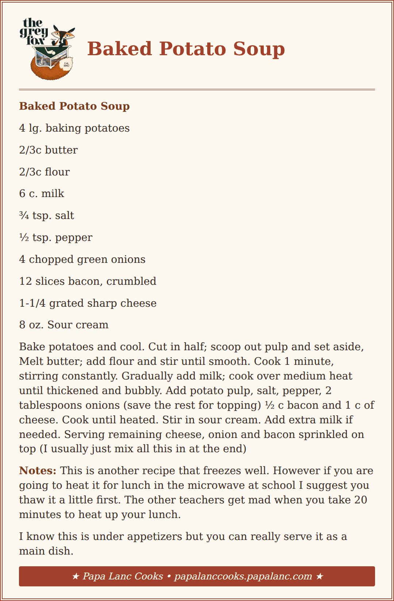

WELCOME
Baked Potato Soup
4 lg. baking potatoes
2/3c butter
2/3c flour
6 c. milk
¾ tsp. salt
½ tsp. pepper
4 chopped green onions
12 slices bacon, crumbled
1-1/4 grated sharp cheese
8 oz. Sour cream
Bake potatoes and cool. Cut in half; scoop out pulp and set aside, Melt butter; add flour and stir until smooth. Cook 1 minute, stirring constantly. Gradually add milk; cook over medium heat until thickened and bubbly. Add potato pulp, salt, pepper, 2 tablespoons onions (save the rest for topping) ½ c bacon and 1 c of cheese. Cook until heated. Stir in sour cream. Add extra milk if needed. Serving remaining cheese, onion and bacon sprinkled on top (I usually just mix all this in at the end)
Notes: This is another recipe that freezes well. However if you are going to heat it for lunch in the microwave at school I suggest you thaw it a little first. The other teachers get mad when you take 20 minutes to heat up your lunch.
I know this is under appetizers but you can really serve it as a main dish.

WELCOME
Converted from the original file for viewing — open/download the original to edit it.